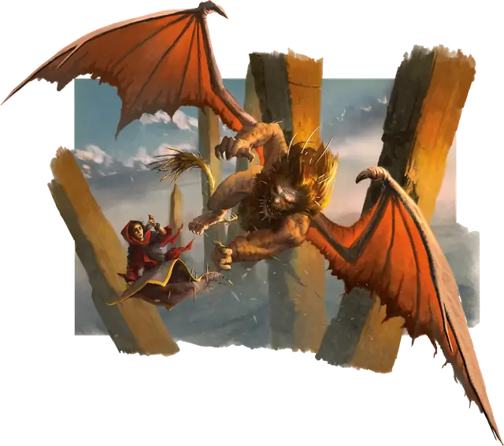

Мантикора
Manticore
Большое Чудовище, Принципиальное Злое

Класс Защиты 14 Инициатива +3 (13)
Хиты 68 (8к10 + 24)
Скорость 30 футов, Полёта 50 футов
| мод | спас | ||
|---|---|---|---|
| СИЛ | 17 | +3 | +3 |
| ЛОВ | 16 | +3 | +3 |
| ТЕЛ | 17 | +3 | +3 |
| мод | спас | ||
|---|---|---|---|
| ИНТ | 7 | −2 | −2 |
| МДР | 12 | +1 | +1 |
| ХАР | 8 | −1 | −1 |
Чувства Тёмное зрение 60 футов, пассивное Восприятие 11
Языки Общий
Опасность 3 (700 опыта; БВ +2)
Действия
Мультиатака. Мантикора совершает три атаки Раздиранием или Шипом с хвоста в любой комбинации.
Раздирание. Бросок рукопашной атаки: +5, досягаемость 5 фт. Попадание: 7 (1к8 + 3) Рубящего урона.
Шип с хвоста. Бросок дальнобойной атаки: +5, дистанция 100/200 фт. Попадание: 7 (1к8 + 3) Колющего урона.
Бонус мастерства +2
Среда обитания Арктика, Горы, Луга, Прибрежье, Холмы
Сокровища Любые
Мантикора
Крылатый лев-людоед
Со львиными когтями, кожистыми крыльями и широкими челюстями, усаженными рядами острых зубов, мантикоры обрушиваются на путников с воздуха и пожирают их. Мантикоры жаждут вкуса человеческой плоти, но, когда излюбленной добычи нет, охотно поедают других разумных существ и домашний скот.
Хвосты мантикор покрыты отделяющимися шипами. Эти чудовища выстреливают шипами в добычу, пронзая тех, кто на земле, или сбивая летучих созданий с неба.
Несмотря на прожорливость, мантикоры любят поговорить с теми, кого вот-вот съедят. Порой они даже заключают сделки со своей добычей. Совершите бросок по таблице «Переговоры с мантикорой» для вдохновения или определите сами, что мантикора может предложить в обмен на более соблазнительную трапезу.
Переговоры с мантикорой
| 1к8 | Мантикора соглашается… |
| 1 | Напасть на конкретного врага. |
| 2 | Устроить отвлекающий манёвр. |
| 3 | Отдать пленника или труп. |
| 4 | Позволить группе пройти через её владения невредимыми. |
| 5 | Позволить кому-нибудь притвориться, что тот убил её в бою. |
| 6 | Напугать или пригрозить кому-либо. |
| 7 | Послужить верховым скакуном до захода солнца. |
| 8 | Попытаться отыскать что-либо с неба. |